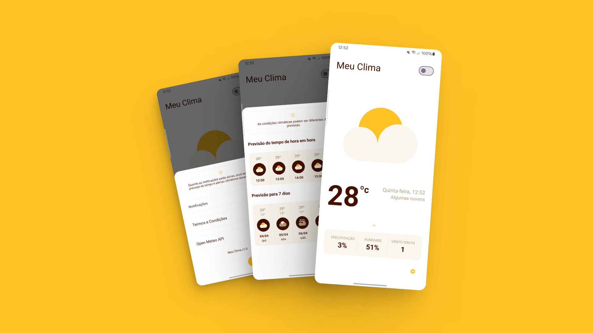

Meu Clima é um aplicativo de previsão do tempo que fornece informações precisas e atualizadas sobre o clima em sua localização atual, permitindo que você esteja sempre preparado para qualquer condição meteorológica.
A Open Meteo faz parceria com serviços meteorológicos nacionais para trazer dados abertos com alta resolução, variando de 1 a 11 quilômetros. Você pode acessar o site do para acessar a API.
Meu Clima é um aplicativo essencial para quem deseja se manter informado sobre as condições climáticas locais. Após a instalação e a concessão das permissões necessárias, o app utiliza a API Open Meteo para acessar os dados meteorológicos da sua localização atual em tempo real. Na página inicial do aplicativo, os usuários podem visualizar detalhes como temperatura atual, indicativo de chuva, umidade relativa do ar e velocidade do vento, oferecendo uma visão abrangente do clima atual.
Além disso, Meu Clima oferece a conveniência de verificar a previsão do tempo para as próximas horas e os próximos 7 dias, permitindo que os usuários planejem suas atividades com antecedência de acordo com as condições climáticas esperadas. A interface intuitiva e de fácil navegação torna a obtenção dessas informações rápida e simples.
Uma funcionalidade adicional do aplicativo é a capacidade de enviar notificações com atualizações do clima ao longo do dia, garantindo que os usuários estejam sempre cientes de quaisquer mudanças repentinas nas condições meteorológicas. Seja para planejar uma viagem, decidir se deve sair ou simplesmente se preparar para o dia, Meu Clima é o companheiro perfeito para estar sempre um passo à frente das condições climáticas.